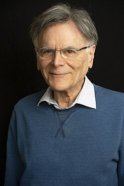

Graeme Segal | |
|---|---|
 Graeme Segal in 2026 | |
| Born | 21 December 1941 |
| Alma mater | University of Sydney St Catherine's College, Oxford |
| Known for | Atiyah–Segal completion theorem Segal conjecture |
| Spouse | Marina Warner |
| Awards | Pólya Prize (1990) Sylvester Medal (2010) Chern Medal (2026) |
| Scientific career | |
| Fields | Mathematics |
| Institutions | Worcester College, Oxford St Catherine's College, Oxford St John's College, Cambridge[1] All Souls College, Oxford |
| Thesis | Equivariant K-theory (1967) |
| Michael Atiyah | |
{kind=link}
Graeme Bryce Segal FRS[2] (born 21 December 1941) is an Australian mathematician, and professor at the University of Oxford.
Biography
Segal was educated at the University of Sydney, where he received his BSc degree in 1961. He went on to receive his D.Phil. in 1967 from St Catherine's College, Oxford; his thesis, written under the supervision of Michael Atiyah, was titled Equivariant K-theory.
His thesis was in the area of equivariant K-theory. The Atiyah–Segal completion theorem in that subject was a major motivation for the Segal conjecture, which he formulated. He has made many other contributions to homotopy theory in the past four decades, including an approach to infinite loop spaces. He was also a pioneer of elliptic cohomology, which is related to his interest in topological quantum field theory.
Segal was an Invited Speaker at the ICM in 1970 in Nice[3] and in 1990 in Kyoto.[4] He taught at Oxford University from 1964 to 1990, then became the Lowndean Professor of Astronomy and Geometry at the University of Cambridge from 1990 to 1999, and then a Senior Research Fellow of All Souls College, Oxford from 1999 to 2009. He was elected the President of the London Mathematical Society in 2011.
He was elected a Fellow of the Royal Society in 1982 and was awarded the Sylvester Medal by the Royal Society in 2010.[5]
He is married to writer Marina Warner. They live in London.[6]
Books
- Loop Groups (Oxford Mathematical Monographs). New ed. Clarendon Press, Oxford 2003, ISBN 0-19-853561-9 (with Andrew Pressley).
- Lectures on Lie groups and Lie algebras (London Mathematical Society Student texts Vol. 32). 5th ed. Cambridge University Press, Cambridge 2006, ISBN 0-521-49579-2 (with Ian G. Macdonald and Roger Carter).
References
- ^ Dr Graeme Segal – All Souls College Oxford
- ^ "Fellows of the Royal Society". Royal Society. Retrieved 14 December 2011.
Dr Graeme Segal, elected fellow 1982
- ^ Segal, G. "Equivariant stable homotopy theory." Archived 24 September 2016 at the Wayback Machine In Actes du Congrès International des Mathématiciens (Nice, 1970), vol. 2, pp. 59–63. 1970.
- ^ Segal, Graeme. "Geometric aspects of quantum field theory." Archived 24 September 2016 at the Wayback Machine In Proc. Intern. Congress Kyoto 1990, Math. Soc, pp. 1387–1396. 1990.
- ^ "The Sylvester Medal". The Royal Society. Retrieved 12 October 2010.
- ^ Higgins, Charlotte (6 March 2021). "Interview – Marina Warner". The Guardian. Retrieved 7 March 2021.,
External links
- Dr Graeme Segal FRS Archived 28 September 2013 at the Wayback Machine, Mathematical Institute, University of Oxford
- Dr Graeme Segal, All Souls College
- Graeme Segal at the Mathematics Genealogy Project
- Topology, Geometry and Quantum Field Theory. Proceedings of the 2002 Oxford Symposium in Honour of the 60th Birthday of Graeme Segal.
This article about a United Kingdom mathematician is a stub. You can help Wikipedia by adding missing information. |